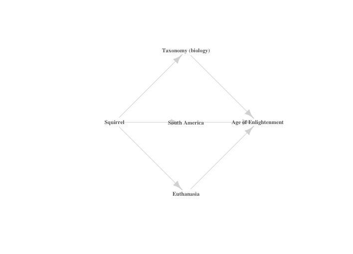
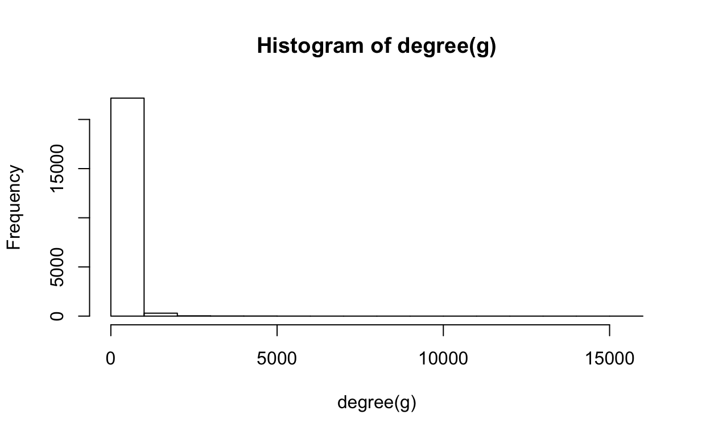
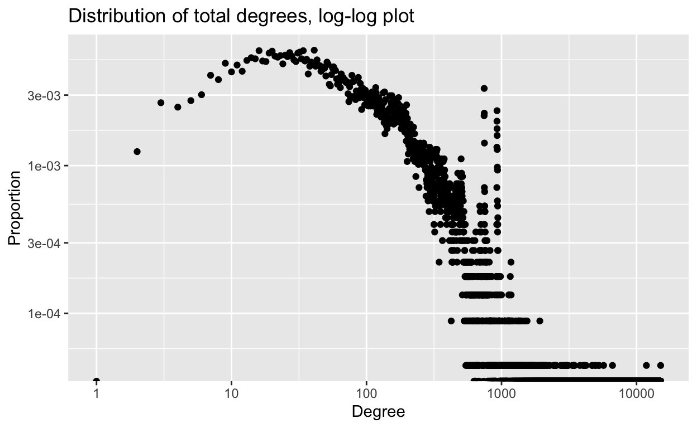
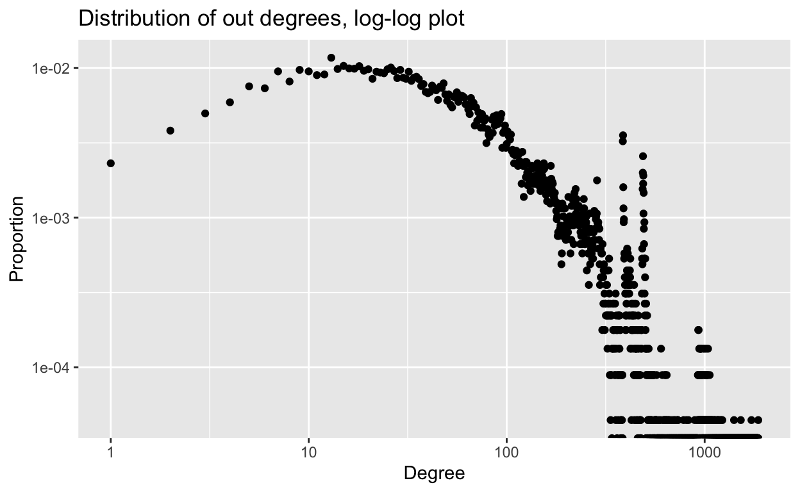
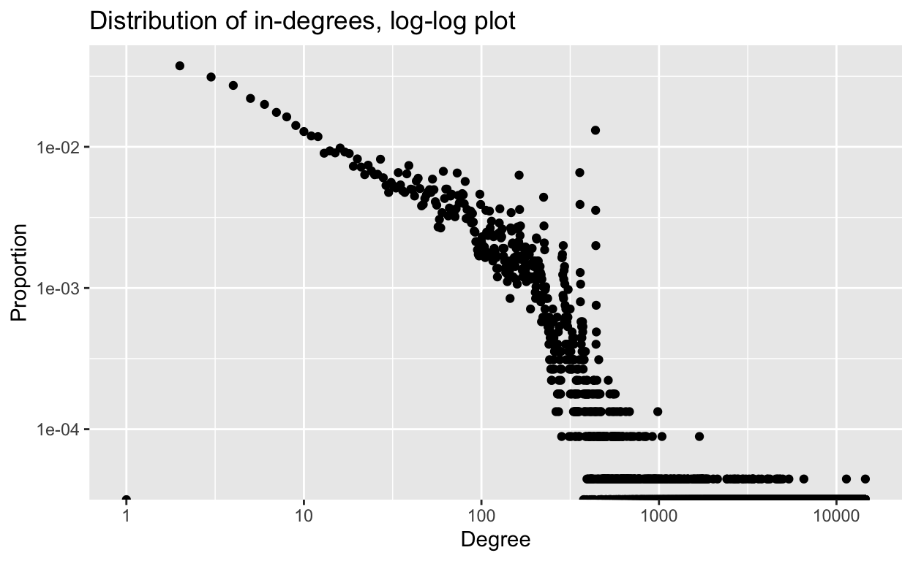
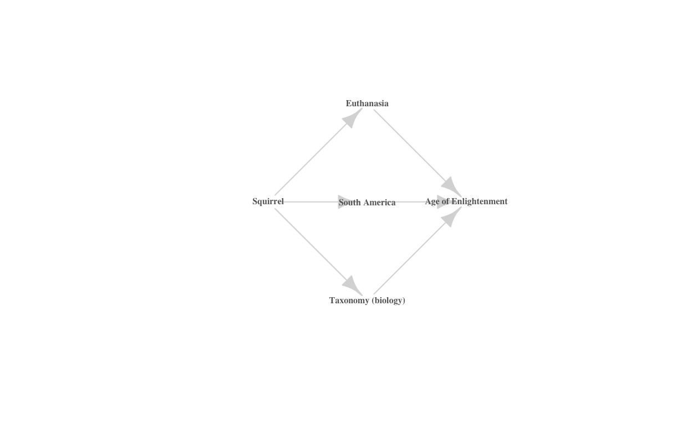
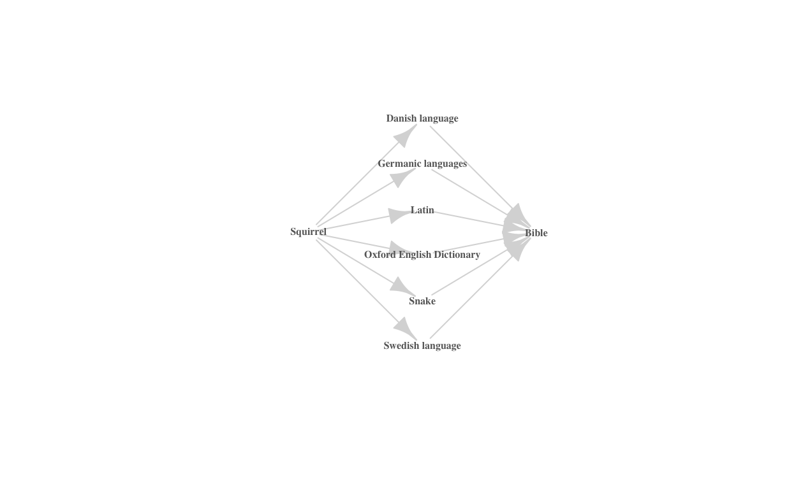
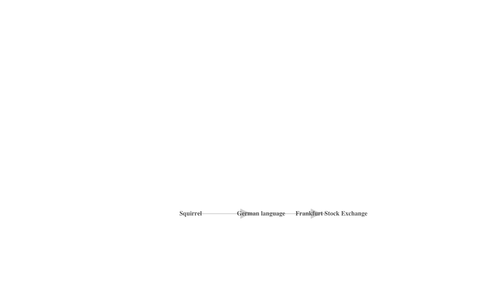

This is the second part of my two-part series on web crawling with R. If you haven’t already, I encourage you to check out part one to understand where the data in this post are coming from.
In this post I cover
- How to present our scraped data as a network using the
igraphpackage (Csardi and Nepusz 2006). - Understanding the degree distribution of our graph.
- How to find all the paths between two nodes on our network.
- How to create a visually appealing (at least I hope so…) representation of all those paths. For this we will make use of the
diagrampackage (Soetaert 2017).
As you might have guessed, we will also rely on dplyr for data processing. But before we get into all of that, let’s quickly recap where we left off last time.
Previously on web crawling with R…
Last time we had just finished crawling the 2-neighborhood of the English Wikipedia page for “Squirrel”. That is, we started at the Squirrel page and visited all the other English Wikipedia pages that we could reach with no more than two clicks. We extracted the URL of each page and its topic. In the end we learned that you could reach over 20,000 other pages with just two clicks! When I first saw that number, I was very surprised and my first goal for this post is to understand the basic connectivity structure of the data we scraped a little better. I want to understand how this number could explode so rapidly. To that end, we will represent the data as a network and our primary tool for analyzing it will be the igraph (Csardi and Nepusz 2006) package. I won’t go into too much detail when it comes to the various network summary statistics that we can look at, focusing mostly on the degree distribution. The official R igraph website contains many more examples of what you can do with this powerful package and Katya Ognyanova’s blog is also a great resource for learning about network analysis with R.
At the end of the last post, our data was stored in two objects. We had
url_dictionary: a two-column data frame storing the topic and the corresponding URL, i.e. the first row is “Squirrel” and “https://en.wikipedia.org/wiki/Squirrel”. This is the node-list of our network and we use it to keep track of the actual topics behind each URL. It is particularly useful for keeping track of different hyperlinks resolving to the same page. For example, “wiki/Adjective”, “wiki/Adjectives”, “wiki/Predicate_adjective” or “wiki/Adjectival_form” all link to the page for “adjective”.edges: a data frame containing the actual edge information of our network. It has four columns:Fromis the name of the topic of the outgoing edge andfrom_urlits URL.to_urlis the URLFromis linking to andTois the topic behind that URL. Currently we have only populated the first three columns and still need to populate theTocolumn.
Just browsing through url_dictionary more or less randomly, we can get a rough feel of what the hyperlink neighborhood of “Squirrel” looks like. We see a lot of topics that we would expect. For example, there are all sorts of different types of other squirrels such as “Fox squirrel”, “Oriental giant squirrel” or “Flying squirrel”. But there are also some rather odd topics mingling in the immediate hyperlink neighborhood of “Squirrel” that we might not have expected, such as “Age of Enlightenment”, “Bible”, “Abraham Lincoln and slavery”, “LGBT rights in Germany” or “Frankfurt Stock Exchange”. My first reaction to finding these topics was “What? How??” and answering the “What? How?” is going to be the second goal for this blog post. More precisely, I would like to have a function, let’s call it graph_path(), to which I can pass any topic and it will show me all the different paths in my hyperlink network leading from “Squirrel” to that topic. The end result should look something like this:
graph_path("Age of Enlightenment")
Goals:
- Understand how number of reachable nodes could explode so quickly.
- Write a function that gives us all the connections from “Squirrel” to a given topic.
All in all, the first step on our agenda is getting our data into network format.
Creating the network
The nodes of our network will be the individual Wikipedia pages and the edges will be the hyperlinks between them. The goal is to represent our data as a simple, directed network. Let’s recall what these two terms mean:
- A network is simple, if there are no self-loops and each edge appears at most once. Obviously, in our data it can (and does) happen that one page will link to another page multiple times. Rather than creating many edges between these two nodes, we will count how many times the link appears and assign it as a weight to the edge.
- A network can be directed or undirected. It is directed if an edge from A to B is not equivalent to an edge from B to A and undirected otherwise. A hyperlink network is a classical case of a directed network. Page A linking to page B does not automatically mean that B is also linking back to page A. Another typical example of a directed network is the Twitter network of who follows whom. This is opposed to the Facebook network, which in social media analysis would be a typical example for an undirected network. If A is friends with B, then B is automatically also friends with A.
Also note that I use the terms “node” and “vertex” interchangeably. In statistics, we usually use the term “network” to denote a random graph as opposed to just “graph” which refers to a deterministic link structure. This is more of a guideline than a strict rule and for the sake of this post “network” and “graph” mean pretty much the same thing.
Let’s take a look at the data frames we have.
head(url_dictionary)| name | url |
|---|---|
| Squirrel | https://en.wikipedia.org/wiki/Squirrel |
| Squirrel (disambiguation) | https://en.wikipedia.org/wiki/Squirrel_(disambiguation) |
| Eocene | https://en.wikipedia.org/wiki/Eocene |
| Precambrian | https://en.wikipedia.org/wiki/Precambrian |
| Cambrian | https://en.wikipedia.org/wiki/Cambrian |
| Ordovician | https://en.wikipedia.org/wiki/Ordovician |
nrow(url_dictionary)
[1] 26655Since different URLs may point to the same web page, this is only an upper bound on the number of nodes in our network. To get the actual size of our network, we can run
length(unique(url_dictionary$name))
[1] 22524To get the number of edges, let’s first process the edges data frame a little. It currently looks like this.
head(edges)The url_dictionary works like an address book for all the topics we scraped. We can use it to populate the To column in our edges data frame using a simple left_join(). Also notice that our edges data frame contains edges that point outside of the 2-neighborhood of “Squirrel”: When we were scraping pages at a distance of 2 from the squirrel page, we also recorded all the outgoing edges from those pages. This was necessary to find any edges pointing back to nodes within the 2-neighborhood we were interested in. But in doing so we also recorded edges pointing out to new pages located at a distance of 3 from the squirrel page. For this project we are not interested in those edges and we remove them by dropping any rows in edges that still contain NA after the left_join() with url_dictionary.
library(tidyverse)
weighted_edges <- edges%>%left_join(url_dictionary, by = c("to_url" = "url"))%>%
mutate(To = name)%>%
select(-name)%>%
filter(!is.na(To))
head(weighted_edges)| From | from_url | to_url | To |
|---|---|---|---|
| Squirrel | https://en.wikipedia.org/wiki/Squirrel | https://en.wikipedia.org/wiki/Squirrel_(disambiguation) | Squirrel (disambiguation) |
| Squirrel | https://en.wikipedia.org/wiki/Squirrel | https://en.wikipedia.org/wiki/Eocene | Eocene |
| Squirrel | https://en.wikipedia.org/wiki/Squirrel | https://en.wikipedia.org/wiki/Precambrian | Precambrian |
| Squirrel | https://en.wikipedia.org/wiki/Squirrel | https://en.wikipedia.org/wiki/Cambrian | Cambrian |
| Squirrel | https://en.wikipedia.org/wiki/Squirrel | https://en.wikipedia.org/wiki/Ordovician | Ordovician |
| Squirrel | https://en.wikipedia.org/wiki/Squirrel | https://en.wikipedia.org/wiki/Silurian | Silurian |
Nice! This is almost what we want to have. Right now, there are still multi-edges in this edge list. For example, “Squirrel” might link to “Eocene” several times. To summarize how many times each topic is linking to another we use group_by(), followed by a filter() to get rid of self-loops:
weighted_edges <- edges%>%left_join(url_dictionary, by = c("to_url" = "url"))%>%
mutate(To = name)%>%
select(-name)%>%
filter(!is.na(To))%>%
group_by(From, To)%>%
summarise(Weight = n())%>%
ungroup()%>%
filter(From != To)
weighted_edges%>%filter(From == "Squirrel")%>%
head()| From | To | Weight |
|---|---|---|
| Squirrel | Abert’s squirrel | 6 |
| Squirrel | Afghan flying squirrel | 6 |
| Squirrel | Africa | 6 |
| Squirrel | African bush squirrel | 6 |
| Squirrel | African giant squirrel | 6 |
| Squirrel | African ground squirrel | 6 |
Alright! edges now contains all the unique edges of our hyperlink network alongside their multiplicity.
nrow(weighted_edges)
[1] 2512479That’s over 2.5 million links that we can click on within two-clicks of the squirrel page. We are now ready to load our network into an igraph object.
library(igraph)
g <- graph_from_data_frame(weighted_edges[,1:2], directed = T)We read in our data as a directed graph, which ticks the second goal we had for representing our data as a network. To check if g is indeed simple, we use is.simple().
is.simple(g)
[1] TRUENice! Note that we also could have read the edge list with multi-edges and self-loops into igraph first and then used the simplify() function with the options remove.multiple=TRUE and remove.loops=TRUE. While that might have been somewhat faster, I think manual data manipulations such as those we did above can be a good exercise to make sure we understand our data properly, e.g. we precisely understand the various reasons why our graph might not be simple and know how to remove them. Anyways, without further ado, let’s dive into some network analytics!
Analyzing the degree distribution
From the last post, we already know that the “Squirrel” page has 512 outgoing connections and above we just saw that there is a total of ~2.5 million directed edges between the ~22.5 thousand nodes of our network. So, some natural questions to ask would be: How are these 22.5k edges distributed amongst the nodes; is it an even spread? Is 512 outgoing edges a lot? How “important” is the squirrel to the connectivity of our network? These questions can be answered by looking at the how the degrees in our network are distributed. We leave the distinction between outgoing and incoming edges aside for the moment and look at the total degree of each node, that is the sum of their incoming degree and outgoing degree. Let’s see what the average total degree is.
mean(degree(g))
[1] 223.0935A natural question to ask when looking at the mean as a summary statistic is always how well it captures the actual underlying distribution of the data. Is it tightly centered around the mean? To answer this question, we might be tempted to plot a histogram of the degrees in g.
hist(degree(g))
Something seems to be going on here. Almost all nodes have a degree somewhere between 1 and 1000 (isolated nodes are not possible due to how the data was collected). But then, not even perceptible on the plot above, there seem to be very few nodes with very high degrees, going all the way up to 15,000. Clearly, a standard histogram is not the best tool for visualizing the distribution of the degrees in our network. And also very clearly, the average degree of 223 does not represent our data accurately at all.
This behavior is actually very common for real world networks and some light can be shed on what is going on here by looking at the degree distribution of our network. The degree distribution of a graph is defined as the empirical distribution of the degrees in our network and is thus a probability distribution in the proper mathematical sense. It can be accessed by calling igraph’s degree_distribution() function. Given a graph g, it returns a numeric vector with a length of the maximum degree of any vertex in g plus 1. The \(i\)-th entry of that vector is the relative frequency of vertices with degree \(i-1\) in g, that is
\[
\text{degree_distribution(g)}_i = \frac{\# \text{vertices of degree } (i-1)}{\text{total number of vertices in }g}.
\] More intuitively, if we pick a vertex in g at random, with probability degree_distribution(g)[i] its degree will be \(i-1\) (the “-1” shift is there, because the first entry gives the relative frequency of vertices with degree zero). For real-world network, such distributions are typically visualized as a log-log plot:
library(ggplot2)
ggplot(mapping = aes(x = 1:(max(degree(g))+1), y = degree_distribution(g)))+
geom_point()+
scale_y_log10()+
scale_x_log10()+
xlab("Degree")+
ylab("Proportion")+
labs(title = "Distribution of total degrees, log-log plot")
Aha! This already tells us a more interesting story. As we can see, indeed most degrees are between 1 and 1,000, while very few nodes have a degree larger than 1,000. This means that the number of vertices in g with degree at least \(k\) decays slowly for large \(k\), implying that the variance of the degree of a vertex picked at random is very large. The shape we observed in the plot above is very typical for real-world networks and known as a power-law distribution and the resulting graphs are called “scale-free graphs”. A distinctive feature of power-law distributions is that they are distributions with fat tails, i.e. there is a strictly positive probability of observing extreme value events, such as the vertices with a degree over 10,000 in our graph. Such a node with a very high degree is commonly referred to as a “hub”. A very good and easy to digest introduction to power-laws and properties of real world networks is the introductory chapter of Remco van der Hofstad’s book on “Random Graphs and Complex Networks” which is freely available online(Hofstad 2016).
Now, let’s look at the out-degrees and in-degrees separately.
out_degrees <- degree_distribution(g, mode = "out")
in_degrees <- degree_distribution(g, mode = "in")
ggplot(mapping = aes(x = 1:(max(degree(g, mode = "out"))+1), y = out_degrees))+
geom_point()+
scale_y_log10()+
scale_x_log10()+
xlab("Degree")+
ylab("Proportion")+
labs(title = "Distribution of out degrees, log-log plot")
ggplot(mapping = aes(x = 1:(max(degree(g, mode = "in"))+1), y = in_degrees))+
geom_point()+
scale_y_log10()+
scale_x_log10()+
xlab("Degree")+
ylab("Proportion")+
labs(title = "Distribution of in degrees, log-log plot")
We see a similar shape of the plot here. One thing to realize, though, is that the out-degrees are capped at around 1,000, while the in-degrees go up all the way to over 10,000. There seem to be a few pages, to which a lot of other pages link, but that themselves do not link back to any other pages. What could they be?
sort(degree(g, mode = "in"), decreasing = TRUE)%>%head(10)
International Standard Book Number
14543
Digital object identifier
11374
PubMed
6550
Taxonomy (biology)
5392
Integrated Authority File
4980
International Standard Serial Number
4817
Wikidata
4798
PubMed Central
4677
Animal
4643
Wayback Machine
4559 Right! Down in the “References” section of each article most topics would be linking to some book together with its ISBN (= “International Standard Book Number”) or some digital media together with its DOI (= “Digital object identifier”), but these would link back to hardly any topics themselves. Let’s take a look at their out-degrees.
degree(g, mode = "out")[c("International Standard Book Number", "Digital object identifier")]
International Standard Book Number Digital object identifier
537 455 While not small in an overall sense, these numbers are tiny when compared to the respective in-degrees. This explains why there is such a discrepancy between the in-degree distribution and the out-degree distribution.
To answer the first question we asked ourselves, i.e. why the number of pages we can reach with two clicks is so large, the out-degrees are actually more interesting, because they allow us to answer the question: When I am at the “Squirrel” page, which pages can I get to with one click which in turn allow me to get to many new pages? Those pages act as gateways to many new pages we can discover. Let’s take a look.
sort(degree(g, mode = "out"), decreasing = TRUE)%>%head(10)
South America Africa
1864 1722
Asia Europe
1521 1406
Sub-Saharan Africa Bird
1227 1217
Americas Germanic-speaking Europe
1206 1197
North America Oceania
1178 1174 That makes sense! All the pages with a high out-degree are either continents or refer in some way to large geographic regions. Of course, a topic such as “South America” would link to all sorts of diverse other topics and for sure the history section of the “Europe” page will link to “Age of Enlightenment”. It also makes sense for “Squirrel” to link to many of the continents/ large geographic regions in the sections talking about where in the world they can be found. This allows us to give an answer for our goal number one: The number of pages we can reach with two clicks grows so rapidly, because the “Squirrel” page links to geographic “hub-pages” that themselves link to a very broad range of topics.
A quick aside: The squirrel subgraph
Now that we have our data in network format, we can actually take a look at how many different squirrel pages we have visited. To that end, we extract all the pages that have “squirrel” in their name and look at the induced subgraph.
squirrels <- str_subset(names(V(g)), pattern = "squirrel")
squirrels <- c(squirrels, "Squirrel")We add to add the capitalized “Squirrel” page manually. This is preferable to running pattern = "squirrel|Squirrel in str_subset(), because as it turns out, there are quite a few pages with capitalized “Squirrel” in their name referring to rock bands, songs and such and we don’t want them in our subgraph. We extract the subgraph induced by all the various squirrel pages with induced_subgraph(), that is, we only keep the graph which has all the pages with “squirrel” in their name as nodes and only the edges between these nodes as edges.
squirrel_graph <- induced_subgraph(g, vids = squirrels)
# Number of vertices
length(V(squirrel_graph))
[1] 272
# Number of edges in the induced subgraph
length(E(squirrel_graph))
[1] 12006That’s 272 different types of squirrels!
We store the layout for plotting the network in the l_force object to make our plots reproducible. If no layout is passed into plot the vertices will be laid out randomly each time we plot the graph.
l_force <- layout_with_kk(squirrel_graph)
plot(squirrel_graph, vertex.size = 2, vertex.label.cex = 0.3, layout = l_force,
edge.arrow.size = 0.005, edge.width = 0.05)
As you can see… you see nothing… Visualizing networks of moderate or large sizes is an art in itself and would deserve its own blog post. The above is an svg image though, so you should be able to zoom in on single nodes and still get a good resolution. We can spot some patterns: The central node in the middle is the “Squirrel” page that unsurprisingly links to most other pages. Furthermore, we seem to have several clusters of different topics. If that is only an artifact of the way the network was plotted above or an actual structural property, is not discernible from this plot alone, but might be an interesting thing to look at in a future blog post. To answer that question, one would have to run a community detection algorithm on the network.
In any case, enough with this aside and on to achieving our goal number two!
Visualizations
It remains to achieve goal number two, creating a function that gives me all the paths from “Squirrel” to any topic I choose. To create a visualization as the one in the introduction, we first need to be able to find all shortest paths leading from “Squirrel” to any other given topic. In igraph we can find those quite easily using all_shortest_paths(). The output is a list of lists and the actual paths are stored in the res value.
all_shortest_paths(g, from = "Squirrel", to = "Age of Enlightenment")$res
[[1]]
+ 3/22524 vertices, named, from 2896928:
[1] Squirrel Taxonomy (biology) Age of Enlightenment
[[2]]
+ 3/22524 vertices, named, from 2896928:
[1] Squirrel South America Age of Enlightenment
[[3]]
+ 3/22524 vertices, named, from 2896928:
[1] Squirrel Euthanasia Age of EnlightenmentThese are exactly the connections we saw in the introduction. Currently they are still in igraph format. For our visualization, we want to extract the actual vertex names, which we can achieve like so.
all_shortest_paths(g, from = "Squirrel", to = "Age of Enlightenment")$res[[1]]%>%
names()
[1] "Squirrel" "Taxonomy (biology)"
[3] "Age of Enlightenment"This will be the first building block of our function graph_path().
graph_path <- function(target){
paths <- all_shortest_paths(g, "Squirrel", target)$res
sapply(paths, names)
#####
## Some more visualization code to be added here
####
}graph_path() gives us a matrix in which each column represents one valid path from “Squirrel” to our target.
graph_path("Age of Enlightenment")
[,1] [,2]
[1,] "Squirrel" "Squirrel"
[2,] "Taxonomy (biology)" "South America"
[3,] "Age of Enlightenment" "Age of Enlightenment"
[,3]
[1,] "Squirrel"
[2,] "Euthanasia"
[3,] "Age of Enlightenment"To visualize these paths, we have to lay out the nodes in the diamond shape from the introduction. We can do this using the coordinates() function from the diagram package. It allows us to arrange objects in a grid-like manner. Its pos argument takes a vector specifying how many objects we want in each column of our grid. In the case above, this vector will be of length three, with the first and last entry equal to one (corresponding to “Squirrel” and “Age of Enlightenment”). The middle entry will be equal to the number of paths leading from “Squirrel” to “Age of Enlightenment”, so in this case, 3. Setting hor=F ensures we get the layout above. Since the distance to any other node from “Squirrel” is either one or two, we only need to distinguish between these two cases.
library(diagram)
graph_path <- function(target){
paths <- all_shortest_paths(g, "Squirrel", target)$res
paths_matrix <- sapply(paths, names)
# If our matrix has only two rows,
# Squirrel must be connected to the target directly
if(nrow(paths_matrix) == 2){
coords = coordinates(pos = c(1,1), hor = F)
#####
### Visualization code goes here
#####
}else{
coords <- coordinates(pos = c(1, ncol(paths_matrix), 1), hor = F)
#####
### Visualization code goes here
#####
}
}Finally, we can plot the paths by turning paths_matrix into an edge list and passing coords as layout to the plotting function.
graph_path <- function(target){
paths <- all_shortest_paths(g, "Squirrel", target)$res
paths_matrix <- sapply(paths, names)
# If our matrix has only two rows, Squirrel must be connected to the target directly
if(nrow(paths_matrix) == 2){
coords = coordinates(pos = c(1,1), hor = F)
plot(graph_from_edgelist(matrix(c("Squirrel", target), nrow = 1)),
layout=coords, vertex.shape = "none",
vertex.label.font=2, vertex.label.color="gray40",
vertex.label.cex=.5, edge.color="gray85")
}else{
coords <- coordinates(pos = c(1, ncol(paths_matrix), 1), hor = F)
g <- graph_from_edgelist(rbind(t(paths_matrix[1:2,]), t(paths_matrix[2:3,])))
plot(g, layout=coords, vertex.shape = "none",
vertex.label.font=2, vertex.label.color="gray40",
vertex.label.cex=.5, edge.color="gray85")
}
}Let’s try it out.
graph_path("Age of Enlightenment")
Great! This is the plot from the beginning. Now we can finally figure out how we can reach the other unexpected topics mentioned in the introduction.
graph_path("Bible")
graph_path("Abraham Lincoln and slavery")
graph_path("LGBT rights in Germany")
graph_path("Frankfurt Stock Exchange")
As we might have expected, there are quite a few ways of reaching such a broad topic as “Bible” from “Squirrel”. I especially like the path “Squirrel” -> “Snake” -> “Bible”, because it make so much sense, when you think about it. For slightly more specific topics as “LGBT rights in Germany”, only one unique path can be found.
Feel free to play around with the functions shown here and let me know if you find any particularly interesting connections in the data! You can get the data from the accompanying GitHub repository.
If you have any comments or suggestions, feel free to comment below or reach out to me via my social media channels. The easiest way to get in touch is via Twitter.
Csardi, Gabor, and Tamas Nepusz. 2006. “The Igraph Software Package for Complex Network Research.” InterJournal Complex Systems: 1695. http://igraph.org.
Hofstad, Remco van der. 2016. Random Graphs and Complex Networks. Vol. 1. Cambridge Series in Statistical and Probabilistic Mathematics. Cambridge University Press. https://doi.org/10.1017/9781316779422.
Soetaert, Karline. 2017. Diagram: Functions for Visualising Simple Graphs (Networks), Plotting Flow Diagrams. https://CRAN.R-project.org/package=diagram.